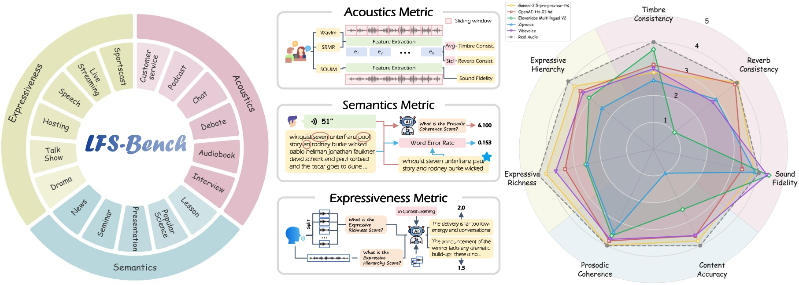
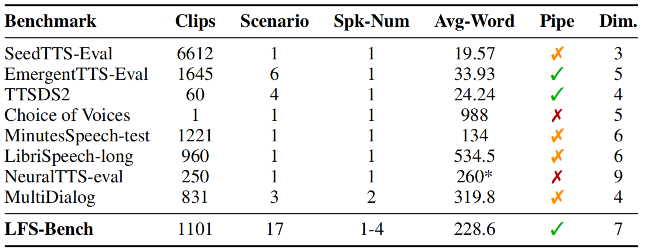
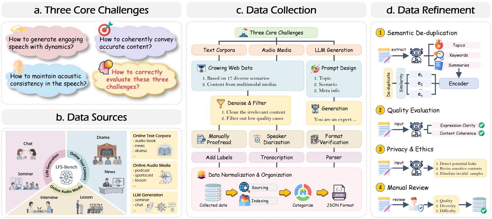
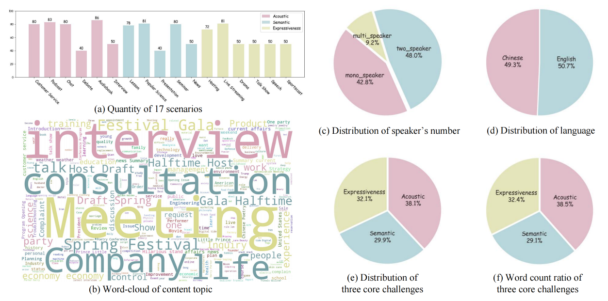
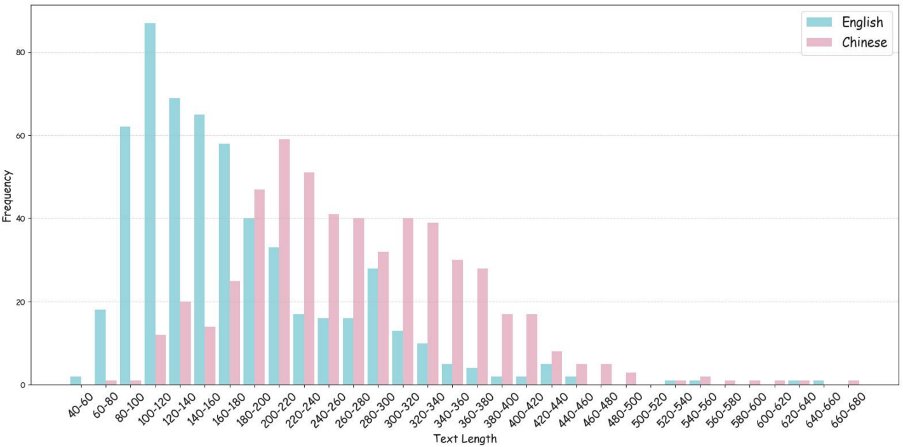

Abstract
Recent advances in speech generation have enabled high-fidelity synthesis, yet systematic evaluation of models under long-context conditions remains largely underexplored. A comprehensive evaluation benchmark for long-form speech is indispensable for two reasons: 1) existing test scenarios are often confined to limited domains, creating a significant gap with the diverse downstream applications; 2) existing metrics overlook critical long-text factors such as consistency and coherence, failing to generalize reliably. To this end, we propose LFS-Bench, a comprehensive benchmark that decomposes “long-form speech quality” into specific, disentangled dimensions. LFS-Bench has three key properties. 1) Rich speech scenarios: Focusing on long-form speech generation and multi-speaker dialog generation, LFS-Bench covers acoustics, semantics, and expressiveness challenges, and consists of 1,101 samples spanning 17 common speech scenarios; 2) Comprehensive evaluation dimensions: Along the acoustics, semantics, and expressiveness axes, LFS-Bench defines an automated evaluation protocol with seven metrics to provide a comprehensive, accurate, and standardized assessment; 3) Valuable insights: Through extensive experiments, we reveal that current models still struggle in highly expressive scenarios and exhibit a notable gap in consistency and hierarchy compared to real recordings.

Introduction
To this end, we propose LFS-Bench, a comprehensive benchmark for long-form TTS models with three core properties: 1) rich scenarios, 2) comprehensive evaluation, and 3) valuable insights.
First, LFS-Bench is defined over two fundamental long-form TTS paradigms: long-form speech generation and multi-speaker dialog generation. Starting from three core dimensions of long-form speech, namely acoustics, semantics, and expressiveness, LFS-Bench constructs 1,101 test samples spanning 17 downstream scenarios, providing broad coverage of long-form TTS applications.
Second, our framework establishes an automatic evaluation protocol that employs a hierarchical approach to decomposing “long-form speech quality.” Transcending the traditional focus on Fidelity and Accuracy, we introduce novel dimensions tailored for long-form characteristics, specifically Acoustic Consistency, Prosodic Coherence, and Expressive Hierarchy. These metrics effectively address the limitations of existing protocols by quantifying temporal stability and expressive dynamics. Moreover, we conduct user studies to validate the reliability of these automated metrics, ensuring they serve as a scalable proxy for human perception.
Finally, through extensive experiments on LFS-Bench, we derive critical insights detailed in Section 5. Our empirical results reveal that while current models rival human recordings in fidelity and accuracy, they exhibit substantial gaps in reverb consistency, prosodic coherence, and expressive hierarchy. Notably, performance deteriorates in highly expressive scenarios, underscoring the persisting challenges in modeling long-term dependencies and dynamic stylistic variations.

Pipeline

Overview of dataset construction and refinement. The process consists of four stages: 1) Formulating LFS-bench based on three core challenges; 2) Selecting 17 downstream speech scenarios aligned with these challenges; 3) Designing a hybrid data collection pipeline; 4) Performing data refinement on the constructed dataset.
Statistics

The categorical statistics of LFS-Bench across five key dimensions: language, speaker numbers, core challenges, content topics and scenarios.

The statistics of the text length distribution within LFS-Bench. The red dashed line indicates the average text length of English, and the green dashed line indicates the average text length of Chinese.